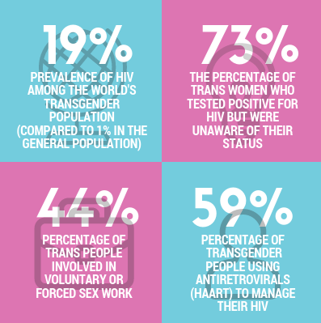
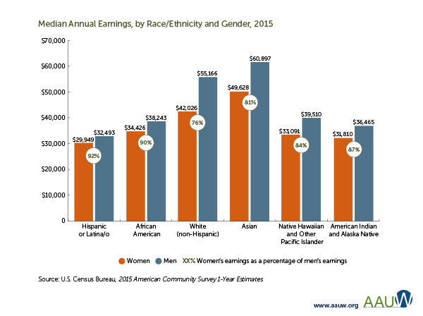
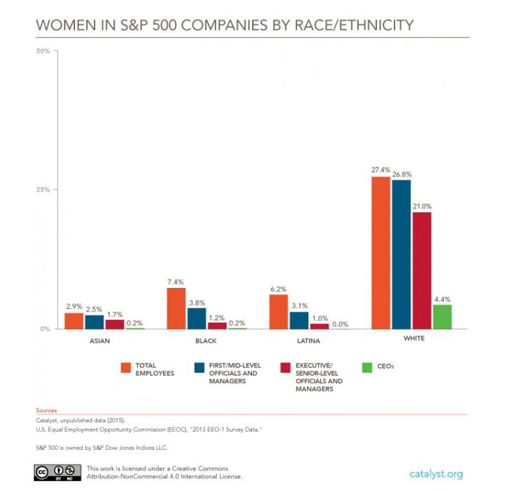

Calculate what salary you should be asking for
Input your location:
Input your job:
There are many barriers that keep women from accessing proper healthcare, we aim to shatter those barriers. In this section you can sign up for health insurance, find a health care provider, get birth control delivered to your door, and learn more about every aspect of your health.
Sign up for health insurance.
The Affordable Care Act gives people access to low cost health insurance without discriminating against preexisting conditions.
Sign UpFind a doctor that works for you.
Healthcare.gov allows you access to health care providers that take your insurance and then compare providers in your area.
Learn MoreBirth control delivered to you.
Find the birth control that works for you then get it prescribed and delivered to your door, all in the comfort of your own home.
Try it OutLearn more about your health.
Planned parenthood provides educational material on everything from sexual health, to mental health, to relationship health.
Learn More
What is consent?
Consent is the unambiguous verbal agreement to participate in any sexual activity with other persons. Consent must be given freely, and once consent is given, it can be taken away at any point. To be more specific, consent applies to numerous aspects of physical intimacy: kissing, touching, and intercourse, (as well as other displays of intimacy,) all require the approval of all participants; male, female, and non-binary alike.
In addition, it is important to highlight the “freely given” aspect of consent. If a person only agrees because they feel afraid or pressured into anything is not consent - they should never feel obligated to have sex or that they “owe” it to their partner. Legally, a person cannot give consent while under the influence of drugs or alcohol, and the best thing to do in these situations is to allow the intoxicated person to sleep it off instead of taking advantage of them in their vulnerable state.
Please stay safe! If your partner responds negatively if you decline their sexual advancements, or if they ignore your signs of discontent, then they do not respect your consent. We recommend discussing your boundaries and if they continue to disrespect you, remove yourself from the situation and cut ties with this person. Your safety is more important than their necessity to own your body.
The lack of security and awareness surrounding sexual assault on college campuses only feeds into this toxic rape culture.
The United States Department of Justice reports that frighteningly, 1 in 4 female undergraduates will be victim to some form of sexual assault before she receives her diploma. While receiving education and learning how to empower and make a life for herself, 25% of women are forced into the submissive roles that plagued women centuries ago in this apparently progressive nation and era . Due to the egregious amount of non-consensual sex in college campuses, an increase in awareness and urgency is necessary to both help and limit the number of victims, as well as ensure that the offenders are served with appropriate jail time.
RAINN highlights that while a quarter of women are sexually assaulted in college, 70% of these crimes remain unreported and of the mere 30% that are reported to the authorities, only 25% of these result in arrest. What is even more chilling is that many of those punished for this heinous crime receive minimal jail time, such as Brock Turner, the unapologetic Stanford rapist who spent three months in jail due to not only the judge’s concern for the criminal’s swim career, but society’s overall acceptance of sexual assault and rapists and the common practice of victim-shaming.
A history of incompetency and neglect on the part of the authorities creates a culture of distrust of the judicial system, which largely contributes to the number of unreported sexual assaults.
In addition, many people, both men and women alike, claim that if a woman were to dress promiscuously or put herself in a vulnerable position (i.e. get drunk), then she deserves the assault. The truth of the matter is that a woman’s body is entitled to no one but herself, and those that practice this victim-blaming promote the notion that women must exercise extreme precautions and limit their personal liberties to prevent men from taking advantage of them.
Is the Wage Gap real?
While widely repudiated and deemed nonexistent by self-proclaiming “meninists” and “anti-feminists”, the wage gap continues to antagonize working women across the nation, ensuring that no matter their worth ethic and perseverance, they will still make 78 cents to the man’s dollar. While several statistics prove the existence of the wage gap, ignorance continues to depreciate these hard facts. Many more conservative outlets claim that men and women make different choices that lead to the salary disparities; according to these sources, men generally choose more dangerous and more high-paying jobs that require more commitment, and that even within the same field, men work harder and choose more rigorous job specifications, and thus deserve a higher salary. While many people hold these “facts” to be indubitable, many reliable news sources highlight several disconcerting statistics that in short, display that even while female college education outweighs that of males, and though men and women hold similar jobs, men are paid more. Here are more specific statistics:
The struggles and inequalities that many trans women face
It is revolutionary for any trans person to choose to be seen and visible in a world that tells us we should not exist --Laverne Cox
While women already face several hardships due to societal biases against them, the struggle for equality, safety, and basic human rights is more treacherous for transgender women, or women who were assigned with the wrong gender at birth. The estimated 1.4 million trans people in the U.S. are consistently ridiculed and bullied for their identity, and even those who claim to support the trans community have several biases and lack cognizance of the realities that trans people face.
Specifically, trans women account for 72 percent of anti-LGBTQ homicide victims.
Many feminists discount the struggles of trans women and separate them from cisgender women due to their “life of male privilege prior to transition”. However, while they did not receive the same sexist treatment as cis women until their transition, they lack the privilege of universal acceptance and respect of their gender. While trans women may not experience menstruation or the pain of childbirth, the sexual harassment and violence that cis women experience often only heightens for trans women.

Source
Image Source
Women of color face additional hardships due to institutionalized racism
While U.S. laws that specifically discriminated against people of color may have been abolished in the U.S., a culture of racism still remains that allows many individuals to continue to attack people (and more specifically, women) of color with zero consequences. Today, women of color account for 18 percent of the U.S. population, yet are a largely unrepresented community regarding discussion on key issues that this nation faces, such as reproductive health care, gender equality, and economic issues, all of which especially affect them, as they can largely influence their status as equal members of society. While women of color have indubitably made incredibly impressive strides in every field, particularly in entrepreneurship and technology, their salary and coworker respect still pales in comparison to that of white women (and, of course, men).
In addition, white men continue to have the majority of leadership positions, especially in politics (even while they prove to make questionable, uneducated, and discriminatory decisions for our nation).
Women of color make up a third of all working women, yet their number diminishes as you go further up the corporate ladder; 16.5 percent of S&P 500 workers are women of color, yet they only account for 0.4 percent of CEOs, not a single one of whom is latina.


Do you want an abortion ?
mo' baby mo' problems
Domestic violence toward women
please don't do it thanks!
many women are subject to workplace harassment
Dear men: stop being dildos. I'd call you dicks, but you're too fake.

Co-Founder
Junior at National Cathedral School. I love sexism. Love it.

Co-Founder
Phasellus eget enim eu lectus faucibus vestibulum. Suspendisse sodales pellentesque elementum.

Co-Founder
Phasellus eget enim eu lectus faucibus vestibulum. Suspendisse sodales pellentesque elementum.

Co-Founder
Corgi Corgi
We want this website to be helpful to everyone, and while we have many resources, one of the most important resources is examples of personal experience! If you have any advice, want an outlet to safely share your story without fear of judgement, or want to ask for help, please post here!
We want to hear from you! How can we improve our website and resources to fit your needs? Whether you have any critique or not, please reach out to us! If you need any advice as well, we are happy to help.